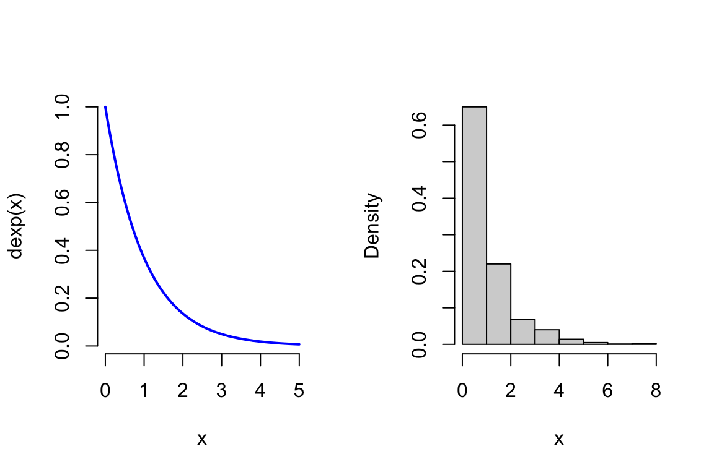
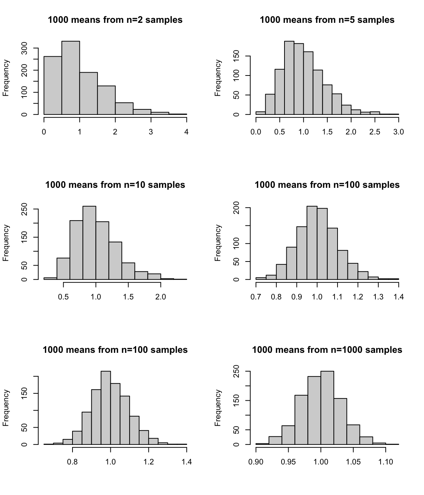

vals<-seq(1,10, by=1)
pmf<-rep(0.1, 10)
cdf<-pmf[1]
for(i in 2:10) cdf<-c(cdf, cdf[i-1]+pmf[i])
par(mfrow=c(1,2), bty="n")
barplot(height=pmf, names.arg=vals, ylim=c(0, 1), main="pmf", col="blue")
barplot(height=cdf, names.arg=vals, ylim=c(0, 1), main="cdf", col="red")VectorByte Methods Training 2023
Probability and Statistics Fundamentals
Assumed Background
There are certain core concepts that are necessary to make good progress in this course. In particular, I expect that you’ve been exposed to
- the axioms of probability and their consequences.
- conditional probability and Bayes theorem
- the definition of a random variable (discrete and continuous)
- basics of probability distribution
- definitions of expectations
- sampling distribution
- Central Limit Theorem (CLT)
- Student-t distribution
- confidence intervals and p-values
Below I do a very fast overview of the first two (mostly just their definitions). This is followed by a more in depth review of RVs and probability distributions along with an introduction to some related concepts (like expectations). This is important background that we’ll need for later on in the course.
I provide practice problems within the text. These are noted as . I will provide solutions in another file at a later date.
Probability Basics
Some probability notation
We have a set, S of all possible events. Let \text{Pr}(A) (or alternatively \text{Prob}(A)) be the probability of event A. Then:
- A^c is the complement to A (all events that are not A).
- A \cup B is the union of events A and B (“A or B”).
- A \cap B is the intersection of events A and B (“A and B”).
- \text{Pr}(A|B) is the conditional probability of A given that B occurs.
Axioms of Probability
These are the basic definitions that we use when we talk about probabilities. You’ve probably seen these before, but maybe not in mathematical notation. If the notation is new to you, I suggest that you use the notation above to translate these statements into words and confirm that you understand what they mean. I give you an example for the first statement.
- \sum_{i \in S} \text{Pr}(A_i)=1, where 0 \leq \text{Pr}(A_i) \leq 1 (the probabilities of all the events that can happen must sum to one, and all of the individual probabilities must be less than one)
- \text{Pr}(A)=1-\text{Pr}(A^c)
- \text{Pr}(A \cup B) = \text{Pr}(A) + \text{Pr}(B) -\text{Pr}(A \cap B)
- \text{Pr}(A \cap B) = \text{Pr}(A|B)\text{Pr}(B)
- If A and B are independent, then \text{Pr}(A|B) = \text{Pr}(A)
Bayes Theorem
Bayes Theorem allows us to related the conditional probabilities of two events A and B:
\begin{align*} \text{Pr}(A|B) & = \frac{\text{Pr}(B|A)\text{Pr}(A)}{\text{Pr}(B)}\\ &\\ & = \frac{\text{Pr}(B|A)\text{Pr}(A)}{\text{Pr}(B|A)\text{Pr}(A) + \text{Pr}(B|A^c)\text{Pr}(A^c)} \end{align*}
Random Variables (RVs)
A random variable is a object whose value is subject to randomness. Its possible values and their probabilities are described by a probability distribution. They come in two varieties
- discrete (numbers of items or successes)
- continuous (heights, times, weights)
We usually use capital letters – e.g. X, Y, sometimes with bold or with subscripts – to denote the RVs. In contrast we use lower case letters, e.g. x, y, k, to denote the values that the RV takes. For instance, lets say that the heights of the woman at Virginia Tech are the RV, X, and X has a normal distribution with mean 62 inches and variance 6^2, i.e., X \sim \mathrm{N}(62,6^2) distribution. Say we then observe the heights of 3 individuals drawn from this distribution – we would write this as: x=( 70.8, 57.9, 81.8 ).
Probability Distributions
A Probability Distribution is a “is a mathematical description of a random phenomenon in terms of the probabilities of events.” (Wikipedia). That is, it’s a mathematical function (e.g. f(x) or f_k) that gives the probabilities of an RV taking on various alternative values.
You’re probably familiar with the Normal Distribution and the Binomial Distribution. We’ll primarily be working with Normal distributions in this class, but it’s good to be familiar with the general idea of a distribution, as well as a few other distributions.
Discrete RVs and their Probability Distributions
Many things that we observe are naturally discrete. For instance, whole numbers of chairs or win/loss outcomes for games. Discrete probability distributions are used to describe these kinds of events.
For discrete RVs, the distribution of probabilities is described by the probability mass function (pmf), f_k such that:
\begin{align*} f_k \equiv \text{Pr}(X & = k) \\ \text{where } 0\leq f_k \leq 1 & \text{ and } \sum_k f_k = 1 \end{align*}For example, for a fair 6-sided die:
f_k = 1/6 for k= \{1,2,3,4,5,6\}.
\star Question 1: For the six-sided fair die, what is f_k if k=7? k=1.5?
Related to the pmf is the cumulative distribution function (cdf), F(x). F(x) \equiv \text{Pr}(X \leq x)
For the 6-sided die F(x)= \displaystyle\sum_{k=1}^{x} f_k
where x \in 1\dots 6.
\star Question 2: For the fair 6-sided die, what is F(3)? F(7)? F(1.5)?
Visualizing distributions of discrete RVs in R
Example: Imagine a RV can take values 1 through 10, each with probability 0.1:
Continuous RVs and their Probability Distributions
Things are just a little different for continuous RVs. Instead we use the probability density function (pdf) of the RV, and denote it by f(x). It still describes how relatively likely are alternative values of an RV – that is, if the pdf his higher around one value than around another, then the first is more likely to happen. However, the pdf does not return a probability, it is a function that describes the probability density.
An analogy:
Probabilities are like weights of objects. The PMF tells you how much weight each possible value or outcome contributes to a whole. The PDF tells you how dense it is around a value. To calculate the weight of a real object, you need to also know the size of the area that you’re interested in and the density there The probability that your RV takes exactly any value is zero, just like the probability that any atom in a very thin wire is lined up at exactly that position is zero (and to the amount of mass at that location is zero). However, you can take a very thin slice around that location to see how much material is there.
Related to the pdf is the cumulative distribution function (cdf), F(x). F(x) \equiv \text{Pr}(X \leq x) For a continuous distribution: F(x)= \int_{-\infty}^x f(x')dx'
For a normal distribution with mean 0, what is F(0)?
Visualizing distributions of continuous RVs in R
Example: exponential RV, where f(x) = re^{-rx}:
vals<-seq(0,10, length=1000)
r<-0.5
par(mfrow=c(1,2), bty="n")
plot(vals, dexp(vals, rate=r), main="pdf", col="blue", type="l", lwd=3, ylab="", xlab="")
plot(vals, pexp(vals, rate=r), main="cdf", ylim=c(0,1), col="red",
type="l", lwd=3, ylab="", xlab="")
Ways to describe properties of distributions and RVs: Moments
When we work with data we often calculate summaries of those data as a way to more easily communicate information about the data. For instance, we often calculate the mean or the median of data as a measure of the central tendancy of the data – that is to give a clue as to what value the middle of the data are near to. Similarly, we calculate the variance, standard deviation, or coefficient of variation as measures of how much spread we see in our data. We want to have similar ways to summarize important characteristics of RVs/probability distributions, as well. The general name for these summaries are “moments”, and we’re usually interested in just a couple of them.
Before we can define some of the moments of a probability distribution, first we’ll define a special mathematical construction called an “expectation” or “expected value”. The expected value is a way to take a very special kind of average related to a probability distribution. Imagine that you take samples from the distribution of heights that we looked at above. If you square them, what will the central tendency of that be? What if you cube them, or take a square root? If you actually have lots of samples, you can just do the calculation! But if you just have the distribution, how do you figure out what the central tendency WOULD be? That’s where the calculation for an expected value comes in.
The expected value of a function g(x) given the underlying continuous probability density function, f(x), is described mathematically by: \text{E}[g(x)] \equiv \int_{-\infty}^{\infty} g(x) f(x) dx or for a function g(k) and a discrete probability mass function, f_k, by \text{E}[g(k)] \equiv \sum_k g(k) f_k. Here \text{E}[\cdot] is read as “the expected value of \cdot ~”.
We use the expected value with some special functions of x to describe properties of probability distributions, and we call these ``moments’’ of a distribution. These are usually defined as: \mu'_n = \text{E}[(X-c)^n] = \int_{-\infty}^{\infty} (x-c)^n f(x) dx Here c is some value. These moments give you lots of information about the distribution of an RV.
The first moment of an RV is also called the mean or expected value of the RV and we usually denote it as \mu or \text{E}[X]:
\begin{align*} \mu = \text{E}[X] = \int x f(x) dx ~~~~~~ \text{(continuous RVs)}\\ & \\ \mu = \text{E}[X] = \sum_x x f_x ~~~~~~~~~~~~~~~~~~\text{(discrete RVs)} \end{align*}This moment is the main descriptor of the central tendency or location of the RV. Let’s look at how the location of the normal distribution changes as we change its expected value (corresponding to the value of the parameter \mu for the normal distribution). Along with the normal pdf I’ve indicated the mean with a vertical line. Notice that the mean line shows where the middle of the distribution is.
Another way to think about the mean/expected value/first moment of an RV is that it is like calculating the arithmetic mean of data that is perfectly in proportion to the probability distribution of interest. Here’s an example. Recall, for a fair 6-sided die:
f_k = 1/6 for k= \{1,2,3,4,5,6\}
What is \text{E}[k] for this distribution? Imagine that you had 600 rolls of a die – 100 each of 1 through 6. If you were to take the arithmetic mean of those data you would have:
\begin{align*} \text{mean} & = \frac{1}{600} \sum_{i=1}^{600} k_i = \frac{1}{600} \sum_{k=1}^6 100 \times k = \frac{100}{600} \sum_{k=1}^6 k \\ & = \frac{1}{6} \sum_{k=1}^{6} k = \frac{1}{6} (1+2+3+4+5+6) = 3.5 \end{align*}Or we can use the formula for the expected value of the RV directly:
\begin{align*} \text{E}[k] & = \sum_k k f_k = \sum_{k=1}^{6} k \frac{1}{6}\\ & = \frac{1}{6} \sum_{k=1}^{6} k = \frac{1}{6} (1+2+3+4+5+6) = 3.5 \end{align*}So we get the same result – the expected value tells you what the mean of data SHOULD be if it exactly reflects the probability distribution of interest – i.e., if the data are perfectly proportioned according to the relative probabilities of outcomes.
The second central moment (i.e., around the mean, \mu=\text{E}[X]) is the variance of the RV, denoted \sigma^2 or \text{Var}(X)
\begin{align*} \text{Var}(X) & = \text{E}[(X-\mu)^2] = \int (x-\mu)^2 f(x) dx ~~~~~ \text{(continuous RVs)}\\ &\\ \text{Var}(X) & = \text{E}[(X-\mu)^2] = \sum_x (x-\mu)^2 f_x ~~~~~~~~~~~~~~~~\text{(discrete RVs)} \end{align*}This moment is a descriptor of variability that is independent of translation (i.e., if you move the mean), just like if we calculated the variance of some data (in this case, like for the expected value, if we had some perfect data). Let’s look at how the spread of the normal distribution changes as we change its variance (corresponding to the value of the parameter \sigma^2 for the normal distribution). Here the vertical lines indicate areas that are two standard deviations from the mean.
Probability distributions and their moments are descriptors of what we think a population is like. If you know the parameters of the distribution you know everything about the population – moments, how likely are you to see some values than others, etc. You can calculate a lot of quantities yourself, or you can look things up, or use R.
Summation Notation Practice
| i | 1 | 2 | 3 | 4 |
|---|---|---|---|---|
| Z_i | 2.0 | -2.0 | 3.0 | -3.0 |
Compute \sum_{i=1}^{4}{z_i}
Compute \sum_{i=1}^4{(z_i - \bar{z})^2}
What is the sample variance? Assume that the z_i are i.i.d.. Note that i.i.d.~stands for “independent and identically distributed”.
For a general set of N numbers, \{X_1, X_2, \dots, X_N \} and \{Y_1, Y_2, \dots, Y_N \} show that \sum_{i=1}^N{(X_i - \bar{X})(Y_i - \bar{Y})} = \sum_{i=1}^N{(X_i-\bar{X})Y_i}
\star Question 5:} Properties of Expected Values
Using the definition of an expected value above and with X and Y having the same probability distribution, show that:
\begin{align*} \text{E}[X+Y] & = \text{E}[X] + \text{E}[Y]\\ & \text{and} \\ \text{E}[cX] & = c\text{E}[X]. \\ \end{align*}Given these, and the fact that \mu=\text{E}[X], show that:
\begin{align*} \text{E}[(X-\mu)^2] = \text{E}[X^2] - (\text{E}[X])^2 \end{align*}This gives a formula for calculating variances (since \text{Var}(X)= \text{E}[(X-\mu)^2]).
Properties of Variances
Many of the properties of variances can be calculated fairly straightforwardly based on properties of expectations that you found earlier together with the definition of the variance (second moment). However, for this class you can treat the properties as axioms/definitions. Here are the most important properties of variances for this class (where c and a are constants):
- \text{Var}(X)>0
- \text{Var}(X+c)=\text{Var}(X)
- \text{Var}(cX)=c^2\text{ Var}(X)
- \text{Var}(cX+aY)=c^2\text{ Var}(X)+a^2\text{ Var}(Y)+2ac\text{ Cov}(XY) (we’ll come back to this later in the course)
\star Question 6: Functions of Random Variables
Suppose that \mathrm{E}[X]=\mathrm{E}[Y]=0, \mathrm{var}(X)=\mathrm{var}(Y)=1, and \mathrm{corr}(X,Y)=0.5.
- Compute \mathrm{E}[3X-2Y]; and
- \mathrm{var}(3X-2Y).
- Compute \mathrm{E}[X^2].
The Normal Distribution
For the purposes of this course, the Normal (or Gaussian) distribution is the most important. Its pdf is:
\begin{align*} f(x)=\frac{1}{\sqrt{2\pi\sigma^2}}\exp{\left(-\frac{(x-\mu)^2}{2\sigma^2}\right)} \end{align*}with \text{E}[X]=\mu and \text{Var}(X)=\sigma^2. Thus the mean and variance are independent.
Consider two independent, normally distributed RVs, X \sim \mathcal{N}( \mu_x ,\sigma_x^2) and Y \sim \mathcal{N}( \mu_y ,\sigma_y^2). Then some important properties follow:
- X+b \sim \mathcal{N}( \mu_x + b , \sigma_x^2): Adding a constant to a normal RV just shifts the distribution over by that much without impacting the variance.
- cX \sim \mathcal{N}( c \mu_x , c^2 \sigma_x^2): Multiplying a normal RV by a constant results in a new RV that is still normally distributed but the mean shifts and the variance changes.
- X + Y \sim \mathcal{N}( \mu_x + \mu_y ,\sigma_x^2 + \sigma_y^2): The sum of RVs that are normally distributed are also normally distributed.
Probability Distributions in R
For standard probability distributions R can take random draws, calculate the cumulative distribution, probability density, and quantiles. For the normal distribution:
rnorm(3, mean=0, sd=1) ## random draws[1] 0.2090146 0.9317432 -1.4254224qnorm(p=c(0.025, 0.975), mean=0, sd=1) ## quantiles, used for CIs etc[1] -1.959964 1.959964pnorm(q=0, mean=0, sd=1) ## cdf, Pr(x<0.5)[1] 0.5## take a bunch of draws
X <- rnorm(100, mean=0, sd=1)
## make a histogram of the draws
hist(X, freq=F, ylim=c(0, 0.5), xlim=c(-4, 4), main="")
## make a sequency of x values so I can set up a line
x<-seq(-10, 10, length=1000)
## draw a line showing the normal pdf on the histogram
lines(x, dnorm(x, mean=0, sd=1), col="red", lwd=2)
The Sampling Distribution
Imagine that you have some data – an iid sample of n observations of a random variable, \{X_1,\ldots,X_n\}. Suppose that these data come from a population with expected value \text{E}[X_i]=\mu and and \text{Var}(X_i) = \sigma^2. What can we say about the mean, \bar{X}, of this sample? More specifically, what should the expected value and the variance of the mean of our data be?
- \text{E}[\bar{X}] = \text{E}\left[\frac{1}{n}\sum X_i\right] = \frac{1}{n} \sum\text{E}[X_i] = \mu (from the properties of expectations)
- \text{Var}(\bar{X}) = \text{Var}\left( \frac{1}{n} \sum X_i \right) = \frac{1}{n^2} \sum \text{Var}\left( X_i \right) = \displaystyle \frac{\sigma^2}{n} (from the properties of variances)
- If X is normal, then \bar{X} \sim \mathcal{N}\left( \mu , \frac{\sigma^2}{n} \right) (because sums of normal random variables are also normal)
We call this distribution the “distribution of the sample mean” or usually more succinctly the sampling distribution. It is this distribution that we use whenever we want to build confidence intervals or do hypothesis tests based on the mean of our data (more below).
The Central Limit Theorem
The assumption in the previous section about the data coming from a normal distribution perhaps seems a bit restrictive – after all not all data are well described by normal distributions! So what if X is not normal. In that case we call on the central limit theorem (CLT).
The CLT states that for iid random variables, X, with mean \mu and variance \sigma^2, the distribution of the sample mean becomes normal as the number of observations, n, gets large. That is, \displaystyle \bar{X} \rightarrow_{n} \mathcal{N}\left(\mu, \frac{\sigma^2}{n}\right), and sample averages tend to be normally distributed in large samples.
For example, let’s look at the pdf of an exponentially distributed RV. This doesn’t look very normal, and a sample from this distribution (even a large one) doesn’t either:
x <- seq(0, 5, length=1000)
par(mfrow=c(1,2), bty="n")
plot(x, dexp(x), type="l", lwd=2, col="blue")
hist(rexp(1000), xlab="x", main="", freq=FALSE)
However, if we take lots of samples from the exponential, the distributions of the mean do:
par(mfrow=c(3,2), bty="n")
ns <- c(2,5,10,100,100,1000)
for(n in ns) {
hist(apply(matrix(rexp(n*1000), ncol=1000), 2, mean),
main=paste("1000 means from n=", n, " samples", sep=""), xlab="")
}
The relationship between the Normal and Student-t Distributions
In the formulas for the sampling distribution, above, we saw that the distribution of the sample mean depends on the underlying variance of the population (i.e., it depends on \sigma^2). However, we typically don’t know the true, underlying population variance. However, recall what Student (William Sealy Gosset) discovered:
If you have a quantity, \theta \sim \mathcal{N}(\mu,\sigma^2), but you estimate \sigma^2 \approx s^2 where s^2 is the sample variance \left(s^2 = \frac{1}{n-p}\sum_{i=1}^n(\theta_i-\bar{\theta})^2\right) based on n-p degrees of freedom, then the quantity \theta \sim t_{n-p}(\mu, s^2).
The t distribution is just a fat-tailed version of the normal distribution. As n-p \longrightarrow \infty, our tails get skinny and the t becomes normal (note that R provides the standard t-distribution).
## make a sequency of x values so I can set up a line
x<-seq(-4, 4, length=1000)
## draw a line showing the normal pdf on the histogram
plot(x, dnorm(x, mean=0, sd=1), col="red", lwd=2, type="l", xlab="x", ylab="")
lines(x, dt(x, df=2), col=1, lty=2, lwd=2)
lines(x, dt(x, df=5), col=1, lty=3, lwd=2)
lines(x, dt(x, df=50), col=1, lty=4, lwd=2)
legend("topright", legend=c("N(0,1)", "t, df=2", "t, df=5", "t, df=50"),
col=c(2, 1,1,1), lwd=2, lty=1:4)Instead of working with the underlying Normal or t distribution, we often instead work with standardized quantities. That is, we transform to the standard distributions, e.g. the standard normal with mean 0 and variance 1:
\frac{\mu - \bar{\theta}}{\sigma} \sim N(0,1) \;\;\; \mathbf{\Longrightarrow \;\;\; \frac{\mu - \bar{\theta}}{s} \sim t_{n-p}(0,1)}
We will typically use Z \sim N(0,1) (also called the Z-score) and Z_{n-p} \sim t_{n-p}(0,1) to represent standardized random variables from normal and Student-t distributions, respectively.
Notice that both the t and normal distributions and the standardized statistics above, depend upon assumed values for \mu this forms the basis for confidence intervals, hypothesis testing, and p-values.
Confidence Intervals
Suppose Z_{n-p} \sim t_{n-p}(0,1). A centered interval is on this t distribution can be written as: \text{Pr}(-t_{n-p,\alpha/2} \< Z\_{n-p} \< t_{n-p,\alpha/2}) = 1-\alpha. That is, between these values of the t distribution (1-\alpha)\times 100 percent of the probability is contained in that symmetric interval. We can visually indicate these location on a plot of the t distribution (here with df=5 and \alpha=0.05):
x<-seq(-4.5, 4.5, length=1000)
alpha=0.05
## draw a line showing the normal pdf on the histogram
plot(x, dt(x, df=5), col="black", lwd=2, type="l", xlab="x", ylab="")
abline(v=qt(alpha/2, df=5), col=3, lty=2, lwd=2)
abline(v=qt(1-alpha/2, df=5), col=2, lty=2, lwd=2)
legend("topright",
legend=c("t, df=5", "lower a/2", "upper a/2"),
col=c(1,3,2), lwd=2, lty=c(1, 2,2))In the R code here, {\tt qt} is the Student-t “quantile function”. The function {\tt qt(alpha, df)} returns a value z such that \alpha = P(Z_{\mathrm{df}} < z), i.e., t_{\mathrm{df},\alpha}.
How can we use this to determine the confidence interval for \theta? Since \theta \sim t_{n-p}(\mu, s^2), we can replace the Z_{n-p} in the interval above with the definition in terms of \theta, \mu and s and rearrange: \begin{align*} 1-\alpha& = \text{Pr}\left(-t_{n-p,\alpha/2} < \frac{\mu - \bar{\theta}}{s} < t_{n-p,\alpha/2}\right) \\ &= \text{Pr}(\bar{\theta}-t_{n-p,\alpha/2}s < \mu < \bar{\theta} + t_{n-p,\alpha/2}s) \end{align*}
Thus (1-\alpha)*100% of the time, \mu is within the confidence interval (written in two equivalent ways):
\bar{\theta} \pm t_{n-p,\alpha/2} \times s \;\;\; \Leftrightarrow \;\;\; \bar{\theta}-t_{n-p,\alpha/2} \times s, \bar{\theta} + t_{n-p,\alpha/2}\times s
Why should we care about confidence intervals?
- The confidence interval captures the amount of information in the data about the parameter.
- The center of the interval tells you what your estimate is.
- The length of the interval tells you how sure you are about your estimate.
p-Values
What is a p-value? The American Statistical Association issued a statement where they defined it in the following way:
“Informally, a p-value is the probability under a specified statistical model that a statistical summary of the data (e.g., the sample mean difference between two compared groups) would be equal to or more extreme than its observed value.” (ASA Statement on Statistical Significance and P-Values.)
More formally, we formulate a p-value in terms of a null hypothesis/model and test whether or not our observed data are more extreme than we would expect under that specific null model. In your previous courses you’ve probably seen very specific null models, corresponding to, for instance the null hypothesis that the mean of your data is normally distributed with mean m (often m=0). We often denote the null model as H_0 and the alternative as H_a or H_1. For instance, for our example above with \theta we might want to test the following:
H_0: \bar{\theta}=0 \;\;\; \text{vs.} \;\;\; H_a: \bar{\theta}\neq 0
To perform the hypothesis test we would FIRST choose our rejection level, \alpha. Although convention is to use \alpha =0.05 corresponding to a 95% confidence region, one could choose based on how sure one needs to be for a particular application. Next we build our test statistic. There are two cases, first if we know \sigma and second if we don’t.
If we knew the variance \sigma^2, our test statistic would be Z=\frac{\bar{\theta}-0}{\sigma}, and we expect that this should have a standard normal distribution, i.e., Z\sim\mathcal{N}(0,1). If we don’t know \sigma and instead estimate is as s (which is most of the time), our test statistic would be Z_{df}=\frac{\bar{\theta}-0}{s} (i.e., it would have a t-distribution).
We calculate the value of the appropriate statistic (either Z or Z_{df}) for our data, and then we compare it to the values of the standard distribution (normal or t, respectively) corresponding to the \alpha level that we chose, i.e., we see if the number that we got for our statistic is inside the horizontal lines that we drew on the standard distribution above. If it is, then the data are consistent with the null hypothesis and we cannot reject the null. If the statistic is outside the region the data are NOT consistent with the null, and instead we reject the null and use the alternative as our new working hypothesis.
Notice that this process is focused on the null hypothesis. We cannot tell if the alternative hypothesis is true, or, really, if it’s actually better than the null. We can only say that the null is not consistent with our data (i.e., we can falsify the null) at a given level of certainty.
Also, the hypothesis testing process is the same as building a confidence interval, as above, and then seeing if the null hypothesis is within your confidence interval. If the null is outside of your confidence interval then you can reject your null at the level of certainty corresponding to the \alpha that you used to build your CI. If the value for the null is within your CI, you cannot reject at that level.
Further Exercises
The Sampling Distribution
Suppose we have a random sample \{Y_i, i=1,\dots,N \}, where Y_i \stackrel{\mathrm{i.i.d.}}{\sim}N(\mu,9) for i=1,\ldots,N.
- What is the variance of the sample mean?
- What is the expectation of the sample mean?
- What is the variance for another i.i.d. realization Y_{ N+1}?
- What is the standard error of \bar{Y}?
Hypothesis Testing and Confidence Intervals
Suppose we sample some data \{Y_i, i=1,\dots,n \}, where Y_i \stackrel{\mathrm{i.i.d.}}{\sim}N(\mu,\sigma^2) for i=1,\ldots,n, and that you want to test the null hypothesis H_0: ~\mu=12 vs. the alternative H_a: \mu \neq 12, at the 0.05 significance level.
- What test statistic would you use? How do you estimate \sigma?
- What is the distribution for this test statistic if the null is true?
- What is the distribution for the test statistic if the null is true and n \rightarrow \infty?
- Define the test rejection region. (I.e., for what values of the test statistic would you reject the null?)
- How would compute the p-value associated with a particular sample?
- What is the 95% confidence interval for \mu? How should one interpret this interval?
- If \bar{Y} = 11, s_y = 1, and n=9, what is the test result? What is the 95% CI for \mu?